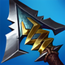
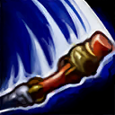
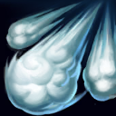

核心裝備
- 星蝕
- 三相之力

席利妲咒怨- 死亡之舞
- 守護天使
以下為本站 7.2d 校正後的標準配置；實戰仍需依敵方陣容調整。


技能優先：Q > E > W
本尊與分身的普攻和技能會替目標疊加層數，使後續對該目標造成更多傷害。

強化下一次普攻，增加距離與傷害並削弱目標物防，是主要短換血技能。
進入潛隱並向前位移，留下能模仿部分技能的分身，用來欺騙與延伸連招。

衝向目標並產生分身攻擊附近敵人，之後提升攻速。
旋轉金箍棒造成持續傷害與擊飛，可在短時間內再次施放，適合團戰連續開戰。
3技 → 普攻 → 1技 → 2技撤退
三技突進取得攻速，普攻接一技降低物防，最後用分身安全退出。
2技 → 3技 → 1技 → 一段4技 → 二段4技
分身進場後接突進與破甲，利用本體和分身的大絕連續擊飛多人。
3技 → 1技 → 4技 → 2技
從側面突進後先降低物防再開大，分身保留用來躲技能或延伸旋轉傷害。
前期 Q 強化普攻後用 W 拉開，分身可躲關鍵技能與重置節奏。
中期從側面或草叢進場，第一次 R 打散陣型，W 後再用第二次 R 追擊。
後期避免正面被看見開團，找視野差進場才能讓雙段擊飛價值最大。
對局名單是本站依英雄機制與目前配置整理的參考，不等同固定勝率。
巴龍路先看對線傷害類型，再看中後期前排、回復與控制；只替換真正需要的格子。
觸發：對線英雄以前期物理換血或普攻壓制為主。
改走鍍板鋼蓋→裝甲戰靴，直接降低物理與普攻換血壓力。
提醒：不要只看敵方整隊物理英雄數量；巴龍路這格優先服務前期直接對線。
觸發：對線英雄主要靠魔法傷害或控制建立換血優勢。
改走水星之靴→鎖鏈軍靴，補魔防、韌性與魔法護盾。
觸發：敵方有 2 名以上高生命／高抗性前排，且你在邊線或團戰必須長時間處理他們。
斷切能直接提高對高生命敵人的普攻傷害。
觸發：敵方有明顯高治療、高吸血或團戰持續回復核心。
生化龐克鏈鋸之劍提供物攻、生命與技能加速，適合近戰物理角色補重創。
觸發：敵方控制鏈會阻止你進場、追擊或完成輸出時。
先購買水銀飾帶取得主動解控，之後再合成水星彎刀；水銀飾帶是合成組件，不是另一件要與水星彎刀互換的成裝。
犧牲部分輸出型傳奇符文，換取韌性與緩速抗性。
提醒：擊飛與壓制等控制仍要靠站位與時機判斷，不能把所有問題都交給裝備。
7.2a 巴龍路正式版：以 Riot 7.2a 平衡公告為版本基準，並交叉參考 WildRiftFire 7.2a Solo 指南與 WR-META 2026-07-18 巴龍排名；Tier 為本站綜合評級。｜技能名稱依 Riot Games 台灣《激鬥峽谷》英雄頁校正；巴龍路評級、符文、出裝、對局與實戰節奏以本站 7.2a 正式資料為基準。｜v40：巴龍路正式版，完整套用犽凝母版；補齊起手裝、核心三件、三組技能連招與雙欄對局。｜v46：巴龍路第 7 批正式版，套用犽凝固定母版。
本站於 2026-08-27 依 Patch 7.2d 重新檢查此配置。 Tier、出裝、符文與對局屬於 Wild Rift Guide 的整理與分析，不是 Riot Games 官方推薦；版本改動後會再依官方公告與實戰資料校正。